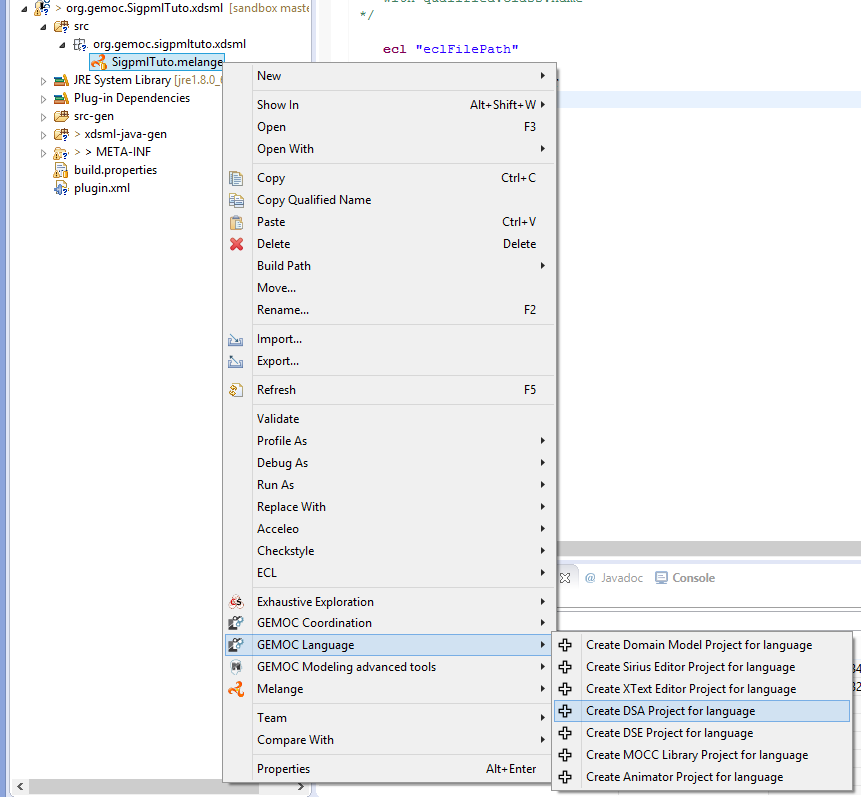

The DSA definition includes two steps : - adding Execution Data and Execution Function in the Ecore model. - creating aspects to weave with the Ecore model in Kermeta3
So first, Execution Data and Execution Function definitions are added to the domain model of SigPMLTuto ecore file. We extend the SigPML metamodel by adding one function execute() in the Block class and the functions push() and pop() in Connector class. These functions are added with the Ecore reflexive editor.
Execution Function in the SigPML metamodel. 


The resulted DSA project is a k3dsa project with a sigpmlAspects.xtend file in the package org.gemoc.sample.xsigpml.k3dsa. This file contains the aspects that we want to add to the necessary classes in our case Block and Connector.

In this tutorial, the implementation of the functions is simple. The execute function increments the currentExecCycle of a block until its value is inferior to the cycles value.
The source code is available through Kermeta 3 aspects,tabsize=4 and showed below
package org.gemoc.sample.xsigpml.k3dsa
import fr.inria.diverse.k3.al.annotationprocessor.Aspect
import sigpml.Application
import sigpml.Block
import sigpml.Port
import sigpml.InputPort
import sigpml.OutputPort
import sigpml.Connector
import sigpml.NamedElement
@Aspect(className=Application)
class ApplicationAspect extends org.gemoc.sample.xsigpml.k3dsa.NamedElementAspect {
}
@Aspect(className=Block)
class BlockAspect extends org.gemoc.sample.xsigpml.k3dsa.NamedElementAspect {
public int currentExecCycle = 0
def public void execute() {
if ( _self.currentExecCycle < _self.cycles )
_self.currentExecCycle = _self.currentExecCycle + 1
else
_self.currentExecCycle = 0
println(_self.name + "\n execute (" + _self.currentExecCycle + ")" )
}
}
@Aspect(className=Connector)
class ConnectorAspect extends org.gemoc.sample.xsigpml.k3dsa.NamedElementAspect {
def public void push() {
println( " Push on : " + _self.name + "\n ")
}
def public void pop() {
println( " Pop on : " + _self.name + "\n ")
}
}
@Aspect(className=NamedElement)
abstract class NamedElementAspect {
}